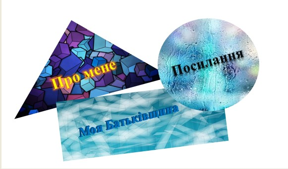

Навігаційна карта
Клацніть на фігурах для переходу до різних розділів

Трикутник (ліворуч)
- Про мене (Домашня сторінка)
Коло (справа вгорі)
- Посилання (Мої гіперпосилання)
Прямокутник (внизу)
- Моя Батьківщина